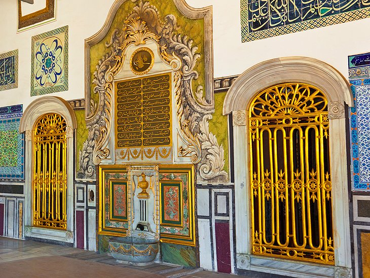
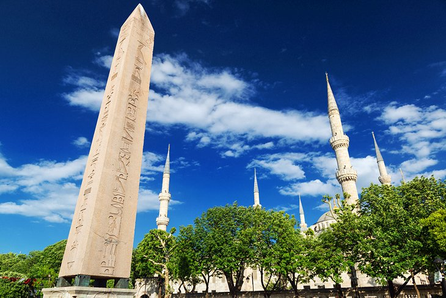
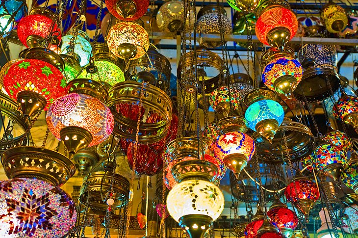
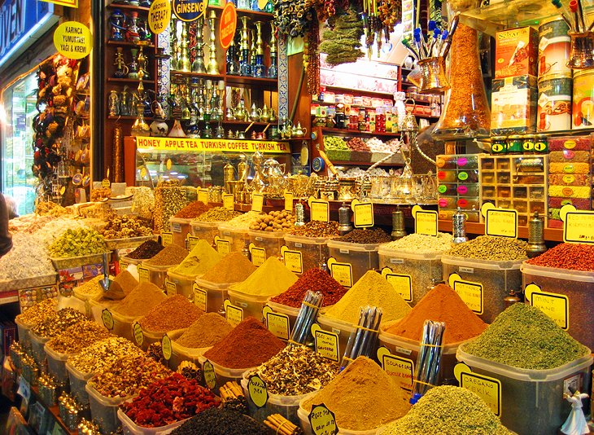
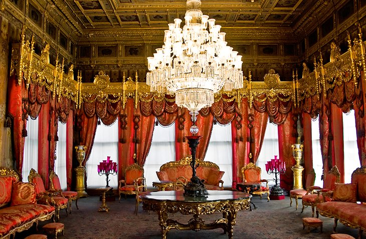

Top-Rated Tourist Attractions
Aya Sofya

It's said that when the Byzantine Emperor Justinian entered his finished church for the first time in AD 536, he cried out "Glory to God that I have been judged worthy of such a work. Oh Solomon, I have outdone you!" The Aya Sofya (formerly the Hagia Sophia) was the emperor's swaggering statement to the world of the wealth and technical ability of his empire. Tradition maintained that the area surrounding the emperor's throne within the church was the official center of the world.
Through its conversion to a mosque, after the Ottoman armies conquered Constantinople, to its further conversion into a museum in the 20th century, the Aya Sofya has remained one of Istanbul's most cherished landmarks.
Topkapı Palace (Topkapı Sarayı)
First built by Mehmet the Conqueror in the 15th century, the sultans of the Ottoman Empire ruled over their dominions from this glorious palace beside the Bosphorus up until the 19th century.
The vast complex is a dazzling display of Islamic art, with opulent courtyards lined with intricate hand-painted tile-work, linking a warren of sumptuously decorated rooms, all bounded by battlemented walls and towers. Of the many highlights here, the most popular are the Harem (where the sultan's many concubines and children would spend their days); the Second Court, where you can walk through the vast Palace Kitchens and stand in awe at the dazzling interior of the Imperial Council Chamber; and the Third Court, which contained the sultan's private rooms. The Third Court also displays an impressive collection of relics of the Prophet Muhammad in the Sacred Safekeeping Room and is home to the Imperial Treasury, where you're greeted with a cache of glittering gold objects and precious gems that will make your eyes water. To fully see Topkapı Palace you'll need at least half a day.
Blue Mosque (Sultan Ahmet Camii)

Sultan Ahmet I's grand architectural gift to his capital was this beautiful mosque, commonly known as the Blue Mosque today. Built between 1609 and 1616, the mosque caused a furore throughout the Muslim world when it was finished as it had six minarets (the same number as the Great Mosque of Mecca). A seventh minaret was eventually gifted to Mecca to stem the dissent. The mosque gets its nickname from its interior decoration of tens of thousands of İznik tiles. The entire spatial and color effect of the interior make the mosque one of the finest achievements of Ottoman architecture. A great sightseeing joy of a trip to Istanbul is wandering amid the gardens sandwiched between the Blue Mosque and the Aya Sofya to experience their dueling domes in twin glory. Come at dusk as the call to prayer echoes out from the Blue Mosque's minaret for extra ambience.
Directly behind the Blue Mosque is the Arasta Bazaar; a great place for a shopping stop as the handicraft shops here sell high-quality souvenirs. Even if you're not interested in a browse, head here to see the Great Palace Mosaic Museum, which is tucked between the Arasta Bazaar and the mosque. This small museum displays the 250-square-meter fragment of mosaic pavement that was unearthed in the 1950s here. Excellent information panels explain the mosaic floor's recovery and subsequent rescue.
Basilica Cistern (Yerebatan Sarnıçı)

The Basilica Cistern is one of Istanbul's most surprising tourist attractions. This huge, palace-like underground hall, supported by 336 columns in 12 rows, once stored the imperial water supply for the Byzantine emperors. The project was begun by Constantine the Great but finished by Emperor Justinian in the 6th century. Many of the columns used in construction were recycled from earlier classical structures and feature decorative carvings. The most famous of these are the column bases known as the Medusa stones in the northwest corner with their Medusa head carvings. A visit here is very atmospheric with the columns beautifully lit and the soft, steady trickle of water all around you.
Hippodrome
The ancient Hippodrome was begun by Septimius Severus in AD 203 and completed by Constantine the Great in AD 330. This was the center of Byzantine public life and the scene of splendid games and chariot races but also factional conflicts. Today, there isn't much of the Hippodrome left to see, except for a small section of the gallery walls on the southern side, but the At Meydanı (park) that now stands on the site is home to a variety of monuments. On the northwest side is a fountain, presented to the Ottoman sultan by the German Emperor William II in 1898. Then, heading southwest are three ancient monuments: a 20-meter high Egyptian obelisk (from Heliopolis); the Serpent Column brought here from Delphi by Constantine; and a stone obelisk that originally was clad in gold-covered bronze plating until they were stolen by the soldiers of the 4th Crusade in 1204.
Istanbul Archaeology Museum

Just a hop, skip, and jump away from Topkapı Palace, this important museum complex brings together a staggering array of artifacts from Turkey and throughout the Middle East, which sweeps through the vast breadth of history of this region. There are three separate sections in the complex, each of which are worthy of a visit: the Museum of the Ancient Orient; the main Archaeology Museum; and the Tiled Pavilion of Mehmet the Conqueror, which holds a staggering collection of ceramic art. As well as all the wonderful artifacts on display, don't miss the interesting Istanbul Through the Ages exhibit room in the main Archaeology Museum.
Grand Bazaar (Kapalı Çarşı)
For many visitors, sightseeing in Istanbul is as much about shopping as museums and monumental attractions, and the Grand Bazaar is where everyone comes. This massive covered market is basically the world's first shopping mall; taking up a whole city quarter, surrounded by thick walls, between the Nure Osmanıye Mosque and Beyazıt Mosque. The Beyazıt Mosque (built in 1498-1505) itself occupies the site of Theodosius I's Forum and has architecture inspired by the Aya Sofya.
Entrance to the bazaar is through one of 11 gates from where a maze of vaulted-ceiling laneways, lined by shops and stalls selling every Turkish souvenir and handicraft you could imagine, cover the area. The various trades are still mostly segregated into particular sections, which makes browsing easier. Near the bazaar's Divanyolu Caddesi entrance is the Burned Column. This stump (still 40 meters high) of a porphyry column was set up by Constantine the Great in his forum. Until 1105 it bore a bronze statue of Constantine.
Süleymaniye Mosque

Sitting high on the hill above Sultanahmet district, the Süleymaniye Mosque is one of the most recognised landmarks of Istanbul. It was built for Süleyman the Magnificent by the famed Ottoman architect Sinan between 1549 and 75. The interior, dominated by its soaring 53-meter-high dome is notable for its harmonious proportions and unity of design. Outside in the tranquil garden area is an interesting Ottoman cemetery that is also home to the türbes (tombs) of the Sultan Süleyman and his wife Haseki Hürrem Sultan (known in the west as Roxelana).
Spice Bazaar (Mısır Çarşısı)
The Spice Bazaar is the place to get your foodie fix of lokum (Turkish delight), dried fruit, nuts, herbs, and of course spice. Much of the money that helped construct it came from the taxes the Ottoman government levied on Egyptian-made products, which is why its name in Turkish (Mısır Çarşısı) means "Egyptian Market". The Spice Bazaar is a prime tourist attraction and at certain times of the day gets ridiculously crowded with huge tour groups from the docked cruise ships. Try to come before 11am or after 4pm.
Just next door to the Spice Bazaar's main entrance is the stately Yeni Camii (New Mosque), which was begun in 1615 and finished in 1663 - that's "new" for Istanbul. It is worthwhile taking a peek inside while you're sightseeing in the area as the interior is richly decorated with tile-work and liberal use of gold leaf.
Dolmabahçe Palace
The sumptuous and ornate Dolmabahçe Palace shows the clear influence of European decoration and architecture on the Ottoman Empire in the 19th century. Built by Sultan Abdülmecid I in 1854, it replaced Topkapı Palace as the main residence of the sultans. The formal gardens are punctuated with fountains, ornamental basins, and blooming flower beds, while inside the sheer splendor and pomp of the Turkish Renaissance style is dazzling. The interiors mix Rococo, Baroque, Neoclassical and Ottoman elements, with mammoth crystal chandeliers, liberal use of gold, French-style furniture, and dazzling frescoed ceilings.
Chora Church (Kariye Müzesi)

Chora means "country" in Greek, and this beautiful Church (originally called the Church of St. Saviour of Chora) lay just outside old Constantinople's city walls. The first Chora Church was probably built here in the 5th century, but what you see now is the building's 6th reconstruction as it was destroyed completely in the 9th century and went through several facelifts from the 11th to 14th centuries. The church (now a museum) is rightly world-famous for its fabulously vibrant 14th-century mosaics, preserved almost intact in the two narthexes and fragmentarily in the nave, and the frescoes along the walls and domes. These incredible examples of Byzantine artistry cover a wide range of themes from the genealogy of Christ to the New Testament stories.
Museum of Turkish and Islamic Arts (Türk ve Islam Eserleri Müzesi)

Housed in the palace of İbrahim Paşa who was Grand Vizier for Sultan Süleyman the Magnificent, this museum is a must-see attraction for anyone interested in Ottoman and Islamic art. The carpet collection on display here is vast and is heralded by textile experts as the world's best. This is a prime place to come have a peek at the dazzling array of styles of Turkish carpets (along with carpets from the Caucasus and Iran) across the centuries before setting out on a shopping mission to purchase your own floor piece. There are also exquisite ceramics, calligraphy, and wood carving exhibits ranging in date from the 9th century AD to the 19th century.
Little Aya Sofya (Küçük Aya Sofya)

Before Emperor Justinian built the Aya Sofya, he had to test out if the building would work structurally so he built this miniature version first. Its original name was the Church of Sergius and Bacchus, but the obvious architectural parallels with the Aya Sofya led to its long-held nickname becoming the building's official title. During the Ottoman era, the church was converted into a mosque and it still functions as a working mosque today. Although its proportions aren't as grandiose as others in Istanbul, the building has been beautifully restored and is well worth a visit. The walk here, down narrow alleyways lined with tall Ottoman era buildings - some lavishly restored and others creaking their way into dilapidation - is a tranquil respite from central Sultanahmet. Take the time to have a glass of tea in the Little Aya Sofya's peaceful garden to sustain you for further sightseeing exploits.
Rüstem Paşa Mosque

Possibly the most perfectly pretty mosque in Istanbul, Rüstem Paşa Mosque is home to the most stunningly preserved İznik tile panels in the city. Sure the Blue Mosque may get all the glory, but it's here - covering both the exterior courtyard walls and the mosque interior itself - that you'll find the best examples of these gorgeously intricate hand-painted tiles in blues, reds, and greens. Even better, as it's less known, you're likely to be able to admire them up close without having to battle any crowds. Finding the mosque adds to the fun as it's squirrelled down a skinny lane lined with market stalls and always bustling with life, near the Spice Bazaar.
Yedikule Fortress (Yedikule Hısarı)

Although it's a bit of a schlep on the suburban train to get out to Yedikule, this commanding fortress is well worth it. Built in the 5th century by the Emperor Theodosius II, the fortress made up the southern section of Constantinople's defensive walls. The mammoth arch (blocked up in the late Byzantine period) was known as Porta Aurea (Golden Gate), with doors plated in gold. When the Ottomans conquered the city they used the fortress for defense, and later as a prison and execution place. Yedikule has been restored in recent years, and you can climb up to the top of the battlements for superb views across the Sea of Marmara.
Galata Tower
This Genoese tower was built in the 14th century and is one of Istanbul's most recognisable landmarks. There are great panoramic views over the city from the top balcony.
Istanbul Modern
Proving that Istanbul isn't just about historic sightseeing, this thoroughly up-to-the-minute art gallery holds an extensive collection of Turkish modern art with an ever-changing calendar of exhibitions hosting both local and international artists throughout the year. This is by far the best place in town to get your finger on the pulse of Turkey's contemporary art scene. The location, right on the Bosphorus, is a winner, and the stylish café here, with knock-out views across the water, makes a good coffee or snack pit stop before hitting some more of the city's highlights.
Pera Museum
Istanbul's most famous art gallery is the lovely Pera Museum, which is where art-hounds head to drink in one of the finest collections of Ottoman era painting in the world. As well as the art, make time to wander through the rest of their collection, which includes plenty of ceramics along with other Ottoman period objects. The program of regularly changing exhibitions often displays some of the art world's biggest names.
İstiklal Caddesi and Taksim
Pedestrianised İstiklal Caddesi (Independence Street) is a bustling modern shopping street with a wealth of restaurants and cafés. The lower end of the street can be reached by taking the world's oldest underground railway from near Galata Bridge, the Tünel, constructed in 1875. There is also a quaintly old-fashioned tramway that runs along its length right up to Taksim Square at the top of the hill. From Taksim Square, busy Cumhuriyet Caddesi is lined with hotels, shops, restaurants, and high rises. On the east side of the road, just after the square, is Maçka Park, which is home to the interesting Military Museum.